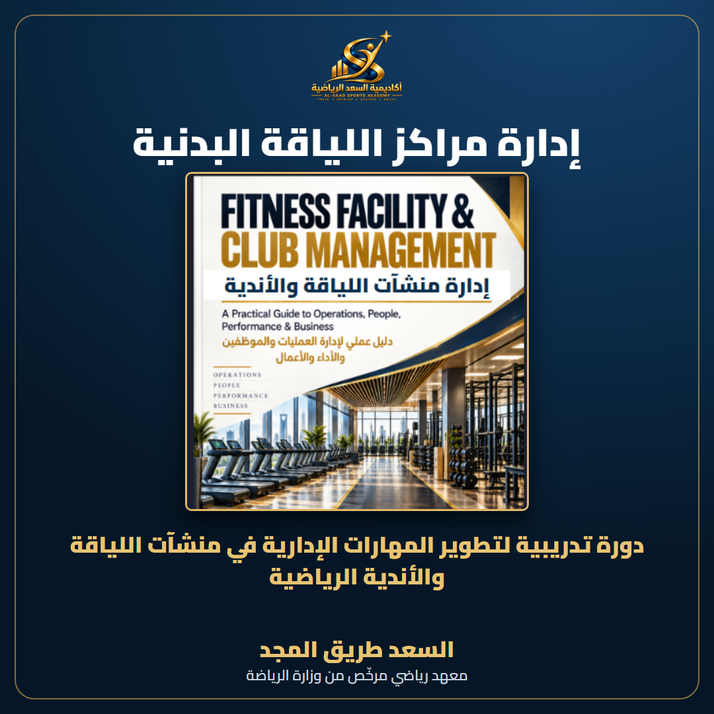
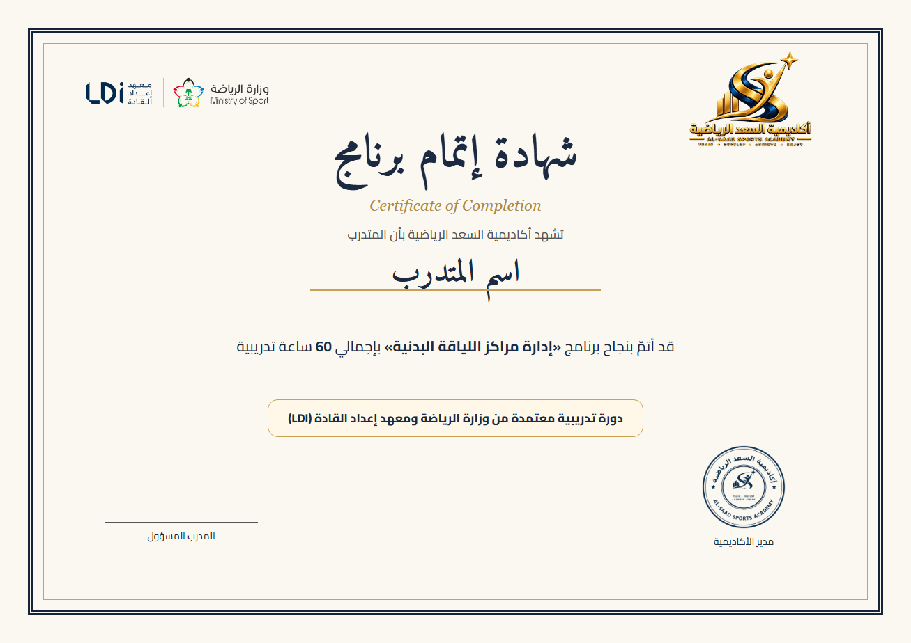
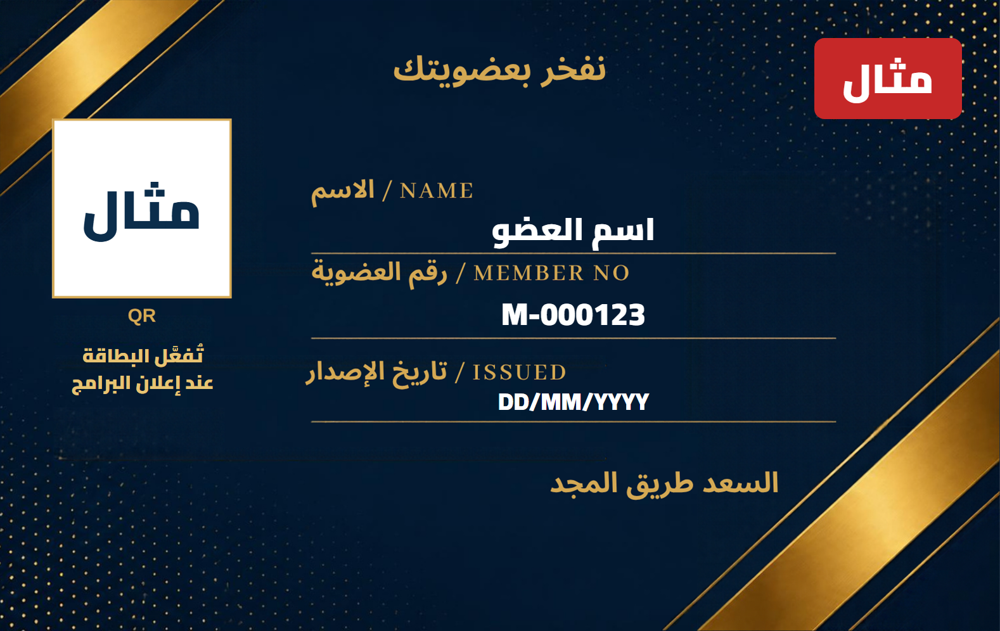

الهدف من الدورة
تطوير مهاراتك الإدارية لتحسين تشغيل منشأة اللياقة، وأدائها المالي، وتجربة أعضائها.ماذا ستتعلم في 12 وحدة؟
- أسس صناعة اللياقة والإدارة
- نموذج العمل والتخطيط الاستراتيجي
- التسويق واستقطاب العملاء
- المبيعات وتوليد الإيرادات
- تجربة العضو والاحتفاظ والولاء
- الإدارة المالية والربحية
- إدارة الأفراد والقيادة
- إدارة المرافق والأصول
- التشغيل والمخاطر والسلامة
- تطوير البرامج والخدمات
- الأداء والبيانات والامتثال
- البيئة السعودية ونمو الأعمال
طريقة الدراسة
60 ساعةتدريبية
حضوري + أونلاينطريقة الدراسة
يومانأسبوعياً
10 أسابيع3 ساعات للجلسة
ماذا بعد الدورة؟
تخرج بأدوات عملية تؤهلك للمنافسة على أدوار إدارية في منشآت اللياقة. ولا تضمن الدورة وظيفة أو ترقية.شروط إتمام الدورة
حضور 80% على الأقل من الجلسات، واجتياز التقييم بدرجة 70% على الأقل. عندها تصدر شهادة الإتمام.نموذج شهادة الإتمام

بطاقة عضويتك

تُفعَّل البطاقة عند إعلان البرامج. الشروط